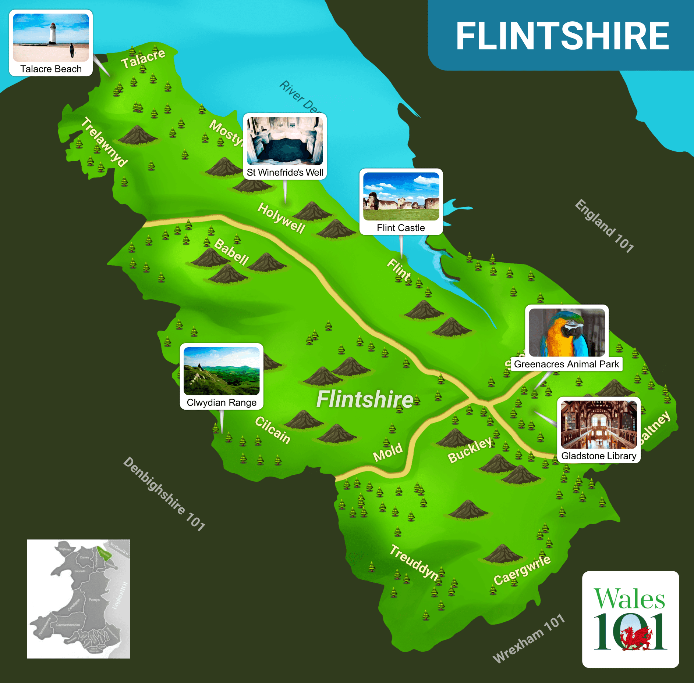

Visiting Flintshire
Flintshire is often referred to as the gateway to Wales due to it's unique location.
These pages will help you discover this truly lovely county with it's mix of heritage,castles, countryside and culture, find placse to stay and lots more.
Please use the following links to explore the website
Natural Beauty
Castles and Culture
Shopping
Walks
Days Out
Right Click on the map and open with a new tab to make the image bigger.
website produced by: Ben O'Brien